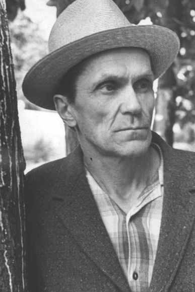

Биография Шаламова Варлама Тихоновича 
|  |
 |
Шаламов Варлам Тихонович (18.06.1907 – 17.01.1982). Писатель Варлам Шаламов родился в Вологде в семье священника Тихона Николаевича Шаламова и его жены Надежды Александровны. В 1914 г. поступил в гимназию имени Александра Благословенного г. Вологды. В 1923 г. окончил единую трудовую школу второй ступени №6, располагавшуюся в бывшей гимназии. В 1924 г. уехал из Вологды и поступил на работу дубильщиком на кожевенный завод г. Кунцево Московской области.
В 1926-м поступает по направлению от завода на 1-й курс Московского текстильного института и одновременно по свободному набору на факультет советского права Московского государственного университета. Выбирает МГУ.
19 февраля 1929 г. арестован при облаве в подпольной типографии при печатании листовок под названием «Завещание Ленина». Получает за это как «социально-опасный элемент» 3 года заключения в лагерях. После содержания в Бутырской тюрьме прибывает с этапом в Вишерский лагерь (Северный Урал). Работает на строительстве Березниковского химкомбината под руководством Э.П.Берзина, будущего начальника колымского Дальстроя. В лагере встречается с Галиной Игнатьевной Гудзь, будущей первой женой (поженились в 1934).
В октябре 1931 г. освобожден из исправительно-трудового лагеря, восстановлен в правах. В 1932 возвращается в Москву и начинает работать в профсоюзных журналах «За ударничество» и «За овладение техникой», с 1934 – в журнале «За промышленные кадры».
В 1936 г. Шаламов публикует первую новеллу «Три смерти доктора Аустино» в журнале «Октябрь» №1.
13 января 1937 г. писатель арестован за контрреволюционную троцкистскую деятельность и вновь помещен в Бутырскую тюрьму. Особым совещанием осужден на 5 лет заключения в исправительно-трудовых лагерях с использованием на тяжелых работах. 14 августа с большой партией заключенных на пароходе прибывает в бухту Нагаево (Магадан). До декабря 1938 г. работает в золотодобывающих забоях прииска «Партизан». В декабре 1938 г. арестован по лагерному «делу юристов». Находится в следственной тюрьме в Магадане («Дом Васькова»), после чего переведен в тифозный карантин магаданской пересыльной тюрьмы. С апреля 1939 по май 1943 работает в геологоразведочной партии на прииске «Черная речка», в угольных забоях лагерей «Кадыкчан» и «Аркагала», на общих работах на штрафном прииске «Джелгала».
В мае 1943 г. арестован по доносу солагерников «за антисоветские высказывания» и за похвалу в адрес писателя И.А. Бунина. 22 июня 1943 г. на суде в пос. Ягодном осужден за антисоветскую агитацию на 10 лет лагерей. Осенью 1943 г. в состоянии «доходяги» попадает в лагерную больницу «Беличья» близ пос. Ягодное. После выписки работает в шахте на прииске «Спокойный». Летом 1945 тяжело больным находится в больнице «Беличья». С помощью сочувствующих медиков выходит из предсмертного состояния. Остается временно в больнице культоргом и подсобным рабочим.
Осенью 1945 г. работает с лесорубами в тайге на зоне «Ключ Алмазный». Не выдержав нагрузки, решается на побег. В наказание направляется на общие работы на штрафной прииск «Джелгала». Весной 1946 г. находится на общих работах на прииске «Сусуман». С подозрением на дизентерию вновь попадает в больницу «Беличья». После выздоровления с помощью врача А.М. Пантюхова направляется на учебу на курсы фельдшеров в лагерную больницу на 23-й километр от Магадана. После окончания курсов направляется на работу фельдшером хирургического отделения в Центральную больницу для заключенных «Левый берег» (пос. Дебин, 400 км от Магадана). Доработает фельдшером в поселке лесорубов «Ключ Дусканья». Начинает писать стихи, вошедшие затем в цикл «Колымские тетради». В 1950 – 1951 гг. работает фельдшером приемного покоя больницы «Левый берег».
13 октября 1951 г. срок заключения окончен. В последующие два года по направлению треста «Дальстрой» работает фельдшером в поселках Барагон, Кюбюма, Лирюкован (Оймяконский район, Якутия), чтобы заработать деньги для отъезда с Колымы. Продолжает писать стихи и написанное отправляет через знакомого врача Е.А. Мамучашвили в Москву к Б.Л. Пастернаку. Получает ответ. Начинается переписка двух поэтов.
12 ноября 1953 г. возвращается в Москву, встречается с семьей. Сразу же встречается с Б.Л. Пастернаком, который помогает установить контакты с литературными кругами. В 1954 г. Шаламов начинает работу над первым сборником «Колымские рассказы». К этому же времени относится расторжение брака с Г. И. Гудзь.
В 1956 г. переезжает в Москву, заключает брак с О.С. Неклюдовой. Работает внештатным корреспондентом журнала «Москва», Публикует первые стихи из «Колымских тетрадей» в журнале «Знамя», №5. В 1957 — 1958 гг. переносит тяжелое заболевание, приступы болезни Меньера, лечится в Боткинской больнице.
В 1961 г. издает первую книжку стихов «Огниво». Продолжает работать над «Колымскими рассказами» и «Очерками преступного мира». В 1964 г. издает книгу стихов «Шелест листьев». Год спустя завершает сборники рассказов колымского цикла «Левый берег» и «Артист лопаты».
В 1966 г. Шаламов разводится с О.С. Неклюдовой. Знакомится с И.П. Сиротинской, в ту пору сотрудницей Центрального государственного архива литературы и искусства.
В 1966 – 1967 гг. создает сборник рассказов «Воскрешение лиственницы». В 1967 г. издает книгу стихов «Дорога и судьба». В 1968 – 1971 гг. работает над автобиографической повестью «Четвертая Вологда». В 1970 — 1971 гг. – над «Вишерским антироманом».
В 1972 г. на Западе, в издательстве «Посев», были опубликованы «Колымские рассказы». Шаламов пишет письмо в «Литературную газету» с протестом против самовольных незаконных изданий, нарушающих авторскую волю и право. Многие коллеги-литераторы воспринимают это письмо как отказ от «Колымских рассказов» и порывают отношения с писателем.
В 1972 г. Шаламов издает книгу стихов «Московские облака». Принят в Союз писателей СССР. В 1973 – 1974 гг. работает над циклом «Перчатка, или КР-2» (заключительным циклом «Колымских рассказов»). В 1977 г. издает книгу стихов «Точка кипения». В связи с 70-летием представлен к ордену «Знак почета», но награды не получает.
В 1978 г. в Лондоне, в издательстве «Overseas Publications», выходит книга «Колымские рассказы» на русском языке. Издание осуществлено также вне воли автора. Здоровье Шаламова резко ухудшается. Начинает терять слух и зрение, учащаются приступы болезни Меньера с потерей координации движений. В 1979 г. с помощью друзей и Союза писателей направляется в пансионат для престарелых и инвалидов.
В 1980 г. получил известие о присвоении ему премии французского Пен-клуба, но премии так и не получил. В 1980 — 1981 гг. — переносит инсульт. В минуты подъема читает стихи навещавшему его любителю поэзии А.А. Морозову. Последний публикует их в Париже, в «Вестнике русского христианского движения».
14 января 1982 г. по заключению медкомиссии переводится в пансионат для психохроников. 17 января 1982 г. умирает от крупозного воспаления легких. Похоронен на Кунцевском кладбище г. Москвы.